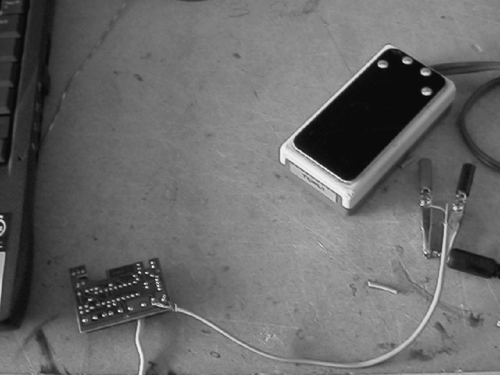

30.2. Input Interface
As the single binary input, we selected the right mouse button. This allowed a variety of buttons to easily be connected to eLocutor. By opening up the mouse and soldering the desired button in parallel with the right mouse button, any electrician or hobbyist should be able to make the connection.
Figure 30-2 shows how we made a temporary connection for Professor Hawking's special switch: the circuit board at the left bottom is taken from the inside of a mouse, and the points at which the external switch was soldered are the ones where the right mouse button is connected.
Figure 30-2. Connecting Professor Hawking's switch in parallel to the right mouse button
30.2.1. The Tree
If you can provide the software only a single binary input, one part of the graphic user interface is obvious: all choices have to be presented turn by turn in the form of a binary tree. At each node, if the user clicks within a fixed time, the interface selects it, which might open up further choices in the form of a subtree. If the user does not click, the software automatically takes him to the next sibling of the node and waits again for a click.
To implement this tree, we used the Visual Basic TreeView control.[§] This should be looked upon as a tree that grows from left to right. If, at any node, you click within a user-selected time interval—which is set using a Timer control—you expand the node and climb up the tree (i.e., move to the right), or, if it is a leaf node, carry out some action. If you don't click, eLocutor shifts its focus to the next sibling of the node. If the bottom is reached without a click, eLocutor starts again with the node at the top.
[§] http://www.virtualsplat.com/tips/visual-basic-treeview-control.asp.
We populated the tree such that it provides, at each level in the tree, a node called Up that, if selected, takes the highlight to its parent, one level closer to the root.
The top-level nodes are Type, Scroll, Edit (the primary editing functions), and Commands (miscellaneous). Leaf nodes in the Type subtree enter text into the typing buffer. Those in the Edit subtree delete or copy text from this buffer, while those in the Scroll buffer control the movement of text between buffers.
The intelligence of eLocutor expresses itself by dynamically repopulating the tree, so that you can relatively quickly find the next action you wish to take: it learns in several different ways from your actions, to be better able to predict in the future.
The biggest problem with binary input is navigation. If you are in the middle of typing and need to delete something at the start of the sentence, it takes a long time to wait for Up many times to get to the root, then down into Scroll to find the correct position to start deleting, then Up several times again to get to the root, then down into Edit for the deletion, then up and down again to scroll to the end, and again to return to typing. We were very relieved to find an answer to this dilemma.
30.2.2. The Long Click
From observing Professor Hawking use Equalizer, I discovered a new mode of operation: besides simply just clicking the button, he could hold down the button and release it at a strategic moment. The button, in effect, is not merely a binary input device, but actually an analog one, for it can provide a signal of varying duration. We thought long and hard about how best to use this new power we were presented with: we could now get more information out of a click than a simple bit. We could, for instance, allow the user to pick from a list of choices. A short click would now be used for the default action, while a long click opened up many other options.
Clearly, we wanted to use this newfound power for some extra choices for rapid navigation. We also were delighted with the ability to perform different operations on the text highlighted in the tree, such as to type it, copy it into the filter, etc. Without the long-click ability, we were limited to one action per leaf node, whereas now we could offer the user other choices regarding what to do with the highlighted tree node, which need not even be a leaf node.
The list of extra choices could not be too large, for that would require the user to hold down the button for relatively long periods of time. Consequently, we wanted these choices to change depending on where in the tree we were. "Type this" for instance, made no sense when we were in the Scroll subtree but was quite handy in the Speller.
What we came up with was a simple, easy-to-understand mode of operation. Clicking a node performs its default action. But if you keep the button pressed, a separate menu opens up whose options roll by one by one, from which you pick one by releasing the button when the desired choice shows up. We use this a bit like the right-click button under Microsoft Windows, to present the user context-sensitive menu choices. These typically include a jump to the root node of the tree, reverse traversal, etc.
The importance of this extra mode of operation can hardly be overstated: not only did it substantially increase the speed of text entry and correction, it provided tremendous flexibility to the developers.
An elegant solution was needed to make the long-click menu context-sensitive, for it would have been too cumbersome to create a special long-click menu for each node of the binary tree. Like the tree, long-click menus are stored in the form of text files, which are editable in eLocutor. In selecting the appropriate long-click menu, eLocutor looks to see which node is highlighted. If a text file exists with the same name as the node in the long-click directory, it is picked up as the menu. If it doesn't, eLocutor looks for the name of the node one level above in the tree, and so on.
In this way, each subtree can have its own long-click menu, entirely under the control of the user. Another way to present this design is to say that unless a child menu item chooses to override the long-click menu defined for its parent, the child automatically inherits the parent's menu.
Partial code for implementing the long click is shown in Example 30-1. OpenLongClick-File looks for and opens a file with the same name as the parameter passed to it, and if that is not found, recursively looks for one with the name of its parent. Each time the long-click timer times out, a fresh line from this file is displayed in the text box tblongclick. When the button is released, the command in tblongclick is selected. Depending on how long the button is held pressed, the long-click timer runs out repeatedly. Each time the timer runs out, it causes the code in Example 30-1 to check and set the Boolean variable ThisIsALongClick, and then to execute some code that needs to run only once in each long click in order to select and open the appropriate long-click file for reading.
The portion that repeats upon each expiration of the long-click timer reads a line from the file and displays it in the tblongclick text box. When the file reaches the end, it is closed and reopened, and the first line is read in. When the button is released, ThisIsALongClick is reset.
Example 30-1. Implementing context-sensitive menu selection for the long click
Commands made available using the long click include:
>Start
-
Takes you to the root of the tree (the > indicates a "go to").
Upwards
-
Moves the cursor backward and upward in the tree until the right mouse button is clicked. Useful when you did not press the button when the desired menu choice was highlighted—i.e., you missed your turn.
Type This
-
Types whatever is highlighted in the tree into the middle box. Available only under the Type subtree.
Set Filter
-
Copies whatever is highlighted in the tree into the filter; useful for searching text. Also available as a long-click option only when the highlighted item is under the Type subtree.
Words Up, Words Down
Pause
-
Useful when a command has to be executed repeatedly. When the user holds the button down for a long click, the menu tree freezes, with one of its items highlighted. Selecting the long-click Pause option maintains this state of suspension. Now, each time the user clicks, the command highlighted in the menu tree is executed. To come out of pause, a long click must again be used.
Help
-
Opens up and plays a context-sensitive .avi video file that explains the choices the tree is offering the user. The Help subdirectory contains a bunch of .avi files. It must contain at least one file, which is called Start.avi. When the Help long-click item is selected, the appropriate .avi file is played, based on where the user currently is in the menu tree.
The correct file to play is found in a fashion similar to the long-click menu. The software first looks for a file with an .avi extension in the helpvideos subdirectory of C:\eLocutor. If such a file is found, it is played; otherwise, eLocutor looks for an .avi file with the name of the parent of the highlighted node. If an .avi file with this name is not found in the helpvideos directory, eLocutor climbs recursively up the menu tree until it finds a node with a corresponding help video. This feature allowed us to ship only overview videos to start with, and gradually add more and more detailed videos, which the user only needed to copy into the helpvideos subdirectory for eLocutor to start showing them.
Some help videos are available at http://www.holisticit.com/eLocutor/helpvideos.zip. Given the dynamic nature of this software, watching some videos will help the reader understand this chapter faster and more thoroughly.
30.2.3. Dynamic Tree Repopulation
The contents of the tree are stored on disk in the form of text files. The big advantage of this approach is that these files can be edited dynamically both by eLocutor and by the user. In other words, they gave us an easy way to meet one of our design criteria: to allow the user herself to adapt eLocutor to her own needs, by making data structures transparent and easily user-editable.
Because eLocutor tries to predict what you may wish to do next, the binary tree needs to be dynamic; subtrees such as Next Word are frequently repopulated. The name of each file is the same as that of a node (with a .txt extension), and contains a list of names of its immediate children. If any of the node names end in .txt, they represent the root of a sub-tree, and the names of its children can be found in the corresponding file. For instance, the root file is named Start.txt and contains the lines type.txt, edit.txt, scroll.txt, and commands.txt, each line corresponding to a set of options displayed to the user for one of the menus described in the earlier section "The Tree."
A node name not ending in .txt represents a leaf node. Selecting it results in some action being taken. For instance, if the leaf node is in the Type subtree, its selection results in the corresponding text being typed into the buffer.
To indicate nodes that are dynamically repopulated, the prefix ^ is used. For instance, the following list shows the contents of type.txt, which form the child nodes of Type in the tree shown in Figure 30-1:
commonwords.txt speller ^word completion.txt ^next word.txt suffixes.txt ^justsaid.txt ^clipboard.txt ^phrase completion.txt ^templates.txt vocabularytree.txt
Subtrees whose names are prefixed with ^ are populated only when the user clicks on the corresponding root node.
The Visual Basic TreeView control has an indexing feature to speed up retrieval. This feature made us think of creating nodes in the tree with words as names, grouped together such that siblings in a tree might replace one another in a sentence without making it sound absurd. For instance, a sentence including the word "London" could easily appear in another context with the word "Boston" in its place.
Using the index in this fashion allowed us to implement two critical features of eLocutor, Replace and Template, which are discussed shortly. The downside, though, was that we had to live with the limitations of the indexing feature of the Tree View control, which does not allow duplicate keys. Nothing prevented us from inserting more than one node with the same name into the tree. Only one of those, however, could be indexed.
The subnode vocabulary tree of Type is the root node of a large subtree, which groups words that might meaningfully replace one other in a sentence. For Replace and Template to work, these need to be indexed. However, the same word might show up at other places in the tree, perhaps as a suggestion for word completion or a next word. Those instances cannot be indexed. To keep it simple, we decided not to index the contents of dynamically repopulated subtrees.
Speller is treated as a special case. Its contents are not dynamic. However, the large number of leaf nodes it contains, besides the fact that it contains every word in the vocabulary tree, means it could not be indexed either. It is populated only as needed—i.e., the children of a node in the speller subtree are created only when it is selected.
30.2.4. Simple Typing
The Type subtree contains three nodes that help you do plain typing. Under Speller appear all the letters from a through z, which allow you to pick the first letter of the word you desire. You are then presented similar choices for the next letter, but only if that combination occurs at the start of a word in the dictionary. In this way, you pick letter by letter, until you have the full word. At this point, the node at which you find yourself may or may not be a leaf node. If it is a leaf node, you can type it by simply clicking it. But often it is not.
"Vocabularytree" and "commonwords," described later, are other nodes that make it easy for you to type. However, if the system's prediction feature is working well, which happens if you are trying to make a sentence similar to one in the database, you do not need these facilities often.
30.2.5. Prediction: Word Completion and Next Word
In the predictor database are several tables. One is a simple list of roughly 250,000 words used to populate the Word Completion subtree. A user who has typed one or more starting characters of a word can use this list to type the rest of the word, suggestions for which are shown to the right of the screen, in the above half, as shown in Figure 30-1. This table is available to the user in its entirety via the Speller subtree.
Say you wish to type the word instant. This is not a leaf node because words such as instantaneous exist that begin with instant. Hence, to type instant, you select each of the seven characters in turn, and then when instant is highlighted, you use a long click to invoke the Type This option.
Another table has the fields word1, word2, and frequency. To populate this table, a long list of sentences are provided to a piece of companion software, dbmanager, which tabulates how often each word follows each other word. Once you have typed a word, this table is queried and the Next Word subtree populated, so that it provides the user a list of words that are likely to follow this one.
Each sentence entered by the user through eLocutor is copied into the file mailtomehtaatvsnldotcom.txt. The reason for this filename was to gently encourage the user to mail me samples of text he had generated using eLocutor, so that I might get some ideas about how to make it more efficient. Users are advised to edit this file and remove whatever is inappropriate before feeding it to dbmanager, so that with time, prediction gets better. In case a software writer wishes to implement a better method of predicting the next word, all she has to do is to alter the query in the Access database; there is no need to delve into the eLocutor code for this.
A separate table lists combinations of punctuation characters occurring in the text supplied to the database, which are treated by eLocutor more or less as words.
It is hard for software to predict what the user might wish to type next, without a knowledge of semantics. We tried talking to linguists to see whether there was a reasonably easy way to make such predictions, but soon gave up. What we did instead was laboriously combine words into semantic groups under the "Vocabulary tree" subtree. For instance, the ancestry of "Boston" in the vocabulary tree is Nouns  Places Cities. Of course, the user can use this subtree to actually type in words, but that isn't very convenient. The semantic subgroups are better for allowing the user to "fill in the blanks" in the Template and Replace features.
Places Cities. Of course, the user can use this subtree to actually type in words, but that isn't very convenient. The semantic subgroups are better for allowing the user to "fill in the blanks" in the Template and Replace features.
30.2.6. Templates and Replace
The user can select any sentence out of the database as a template to create new ones. This is done by first typing its starting word or words, and then looking under the Template subtree. At the bottom of the screen in Figure 30-1 are suggestions for completing the phrase or sentence. To populate this list, eLocutor looks in its database for sentences beginning with what has already been typed since the last sentence terminator. The same suggestions are also available under the Template subtree, with which the user can create new sentences by simply filling in the blanks in old ones. Should there be too many suggestions, a word or phrase can be put into the filter. Only phrases or sentences containing what is in the filter show up.
eLocutor processes templates by looking at the phrase selected as a template, word by word. Any word in the template not found in the vocabulary tree is directly typed into the buffer. For each word found in the vocabulary tree, using the TreeView indexing feature, eLocutor takes the user to that part of the tree, allowing him to pick it or one of its siblings. So, if the sentence "How are you?" is in the database, the user needs just a few rapid clicks to type, "How is she?" While such "fill in the blanks" is taking place, the portion of the template not yet used is visible in the Template box under the tree.
The Template feature takes advantage of the logical grouping of words under the vocabulary tree to transform the contents of an entire sentence or phrase. The Replace feature allows the user a similar facility on just a single word, the last one found in the middle box. However, not all words are listed under the vocabulary tree. A text box on the screen is therefore needed to tell the user which category, if any, the word in question is found under. On the screen is a box captioned Replace. If the last word in the buffer is found in the vocabulary tree, the name of its parent is written into the Replace text box.
For instance, if the last word in the buffer is Boston, the Replace text box contains the word Cities. This tells the user that the software has recognized the category of the last word. If she then selects the Replace command (under the Word Completion subtree), the last word is deleted from the buffer and the user is taken to the place in the vocabulary tree where it was found, allowing her to easily find another city name to replace it with.
In Figure 30-1, the last word typed is We. The Replace box shows subjectpronoun (which doesn't entirely fit in the space provided). Selecting Replace deletes the We and takes the user to the subjectpronoun subtree, where she could easily select You, for instance.
30.2.7. The Cache Implementation
Caching in eLocutor relies on the subroutine SaveReverse, which takes two parameters: the name of the file in which the text is to be saved, and the text itself. The subroutine replaces the file with a fresh one, in which the text passed to SaveReverse is the first line of the file, followed by the first 19 lines of the original contents that do not match the first line.
This is achieved by first writing the text represented by the variable stringtoadd into the first element of starray, then filling the rest of the array with lines from the file as long as they are not the same as stringtoadd (HistoryLength is a constant of value 20). Finally, the file is opened for writing, which causes its previous contents to be deleted, and the entire contents of starray are copied to the file.
Thus, if a city name already listed in favouritecities.txt is used, it simply changes position to become the first name in the file. If a new city name is used, it also becomes the first name, followed by the first 19 lines of the previous contents of the file. In other words, the last line of the file is dropped, and it gets a new first line. As the name of the routine suggests, lines of text are saved in reverse, so the last used word becomes the first.
The code for SaveReverse is shown in Example 30-2.
Example 30-2. Adding text to the start of a text file, without duplication
|
Code View: Scroll / Show All Sub SaveReverse(ByVal filest As String, ByVal stringtoadd As String) 'not
'an append, a prepend...
'with elimination of duplicates
Dim starray(HistoryLength) As String
Dim i As Long
Dim arrlength As Long
Dim st As String
Dim filenum As Long
starray(0) = stringtoadd
filenum = FreeFile
i = 1
On Error GoTo err1
Open filest For Input As #filenum
While Not EOF(filenum) And (i < HistoryLength)
Line Input #filenum, st
If (st <> stringtoadd) Then 'only save non-duplicates
starray(i) = st
i = i + 1
End If
Wend
arrlength = i - 1
Close #filenum
Open filest For Output As #filenum 'this deletes the existing file contents
For i = 0 To arrlength
Print #filenum, starray(i)
Next
Close #filenum
Exit Sub
err1:
' MsgBox "error with file " + filest
Open filest For Output As #filenum
Close #filenum
Open filest For Input As #filenum 'this creates an empty file if one does 'not
exist
Resume Next
End Sub
|
30.2.8. Common Words and Favorites
Frequently used words are collected in the "common words" subtree, which has two components. Part of this subtree is static, consisting of very frequently used words such as a, and, but, etc. The dynamic part contains additional words frequently used by the user, which are found under its "favouritechoices" subtree.
The last 20 words found by the user in Speller can be found under its "favouritespeller" subtree. Likewise, if a node exists in the vocabulary tree called "cities," the user needs only to create a blank file, favouritecities.txt. Thereafter, the last 20 selections made by the user of words found under the cities subtree will be available under "favouritecities" in the "favouritechoices" subtree. In this way, the user can decide himself what kind of words, if used frequently, are worth remembering, and how they should be slotted.
Example 30-3 shows the subroutine that creates a new "favourites" and inserts it into the tree. Please note that stfavourite is the constant favorite, and MakeFullFileName returns a proper filename including the path, filename, and .txt extension.
Example 30-3. How eLocutor files words already typed under "favourites"
|
Code View: Scroll / Show All Public Sub AddToFavourites(parentnode As Node, stAdd As String)
Dim tempfilename As String
If parentnode.Text = stStart Then
Exit Sub
End If
tempfilename = MakeFullFileName(App.Path, stfavourite + parentnode.Text)
If FileExists(tempfilename) Then
SaveReverse tempfilename, stAdd
Else
AddToFavourites parentnode.Parent, stAdd
End If
End Sub
|
Whenever a word is typed, eLocutor looks to see whether it also can be found in the vocabulary tree. Suppose the word Boston has just been typed. In that case, Boston is inserted at the top of the file favouritecities.txt, if it exists, using the subroutine SaveReverse. If not, eLocutor looks for favouriteplaces.txt, because the parent of Cities is Places. If that file doesn't exist, eLocutor tries a higher ancestor. If favouriteplaces.txt does exist, Boston is added to that file using the same subroutine. This provides the user with some control over what the software should consider her "favourites." By creating a file called favouritecities.txt, she is telling eLocutor that she uses city names a lot.
30.2.9. Retracing Paths
To aid in rapid navigation in a rather large tree, eLocutor automatically remembers, for each subtree in which the user has made a selection, what the user did the last 20 times after making a selection here. These destinations are presented conveniently to the user. Each parent node x has a subtree x_Next. After selecting a leaf node, the user should look under the sibling _Next node and select a destination close to where she wants to go next. Effectively, eLocutor detects patterns in operations performed by the user and allows her to repeat them easily. The software also remembers the last 20 files that were opened, the last 20 items of text searched for, and the last 20 statements spoken by the user. All of these were easily implemented using SaveReverse.
30.2.10. The Typing Buffer, Editing, and Scrolling
There were several different ways we could have handled the scrolling of text, and its selection for cutting and pasting. Most editors work with a single window. In the case of a large document, of course, the entire text does not fit in the window displayed, and scrollbars are used to navigate through the text. When text needs to be copied or cut, it has to be first selected. The selected text is highlighted using different foreground and background colors. We had some problems with this standard approach.
We wanted eLocutor to also be usable by persons with cerebral palsy, who often have severe motor disabilities resulting in speech and vision impairment. For them, we needed to show at least part of the text in a very large font. If we were to use this for all text on the screen, we wouldn't have much on the screen at all. We felt it would be awkward to use a substantially larger font for part of the text in a window. Text highlighted for cutting and pasting by changing background color was found by some to be distracting and difficult to read. Our experience in, and fondness of, audio editing led us to select a different paradigm.
In the old days, when audio recording was done using spools of tape, the editor would listen to the tape until he found the start of the portion he wanted to cut, clamp it there, then listen for the end of the portion that was to be deleted, and clamp there again. Now, the portion in between the clamps could easily be cut, or replaced with something else. The tape, therefore, is divided by the two clamps into three sections: that before clamp 1, that after clamp 2, and the portion between clamps.
We adopted the same approach with text, dividing it into three text boxes, with gates between them. Typing is all done at the end of the text in the middle box. This is where the text actually gets inserted and deleted. The Backspace option under Edit deletes text in the middle box from the end. You can decide whether you want to get rid of a character, word, phrase, sentence, paragraph, or the entire middle box.
If you select Cut or Copy under Edit, the entire text in the middle box is copied into the clipboard. Cut, of course, leaves the middle box empty. To compare this with conventional editors, which allow you to set the beginning and the ending of the block of text you wish to cut or copy, imagine that the block begins at the boundary between the upper and the middle box, and ends at the boundary between the middle box and the lower box. Cut or Copy always lifts the entire contents of the middle box.
Having the text in multiple boxes in this way allowed us to make more intensive use of screen real estate. We showed the text in the upper box only during scrolling. At other times, we could use it to show the highlighted tree item in large font, as in Figure 30-1, or the contents of lower levels of the tree to provide the user with a "look ahead." Similarly, we reused the space for the lower box to display the long-click menu at the appropriate time.
There was much trial and error in figuring out what worked best, in use of screen real estate. When individual users make special requests with regard to what they wish to view on the screen, we try to accommodate those in the spaces for the upper and lower boxes.
Analogous to the clamps in audio editing, we have gates. If you wish to cut out a large segment of text, you first scroll until the start of the segment is at the beginning of the middle box. We now close the gate between it at the upper box, so that scrolling does not move text past this boundary: the text is "clamped" at this point. You continue scrolling up or down until the end of the segment you wish to cut is at the end of the middle box. You can now select Cut under Edit.
Menu choices under Scroll allow one or both gates to be opened. Red and green circles show the status of the gates. In Figure 30-1, both gates are open, indicated by green circles to the left and right of the middle box. Two commands, Text Up and Text Down, are available to move text between the boxes. For text to be able to move between the top and the middle box, or between the middle box and the bottom box, the corresponding gate must be open.
The amount of text moved by the text up/down commands depends on the marker selected by the user, which can be character, word, punctuation mark, sentence, or paragraph. The scroll marker currently selected is shown on the screen below the tree. Commands are also available to move the entire contents of the text boxes from one to the other.
In order to be able to scroll a small amount during typing, Words Down and Words Up options are available using the long click. When one of these is selected, words scroll in the selected direction until the right mouse button is clicked again. Note that combinations of punctuation characters are treated as words, too. This allows the user to make quick corrections in the immediate vicinity of the point of insertion or deletion of text, to rapidly scroll a bit while typing.
30.2.11. The Clipboard
When the user selects Cut or Copy in the Edit subtree, SaveReverse is invoked to prepend the contents of the middle box to the file clipboard.txt, keeping a total of 20 paragraphs. The advantage of this approach is that it allows paragraphs to be easily rearranged, and older cuts to be pasted again and again. In most text editors, each time Cut or Copy is selected, the previous contents of the clipboard are lost. In eLocutor, older clipboard information hangs around for a while.
30.2.12. Searching
No self-respecting editor can lack a search function, but eLocutor allowed us to look at this basic function afresh. We realized that searching is indeed just a special case of scrolling, so we merely extended our scroll implementation. The user can copy text from the middle box into the filter buffer, or select Set Filter with the desired text highlighted in the tree via a long click. When text is present in the filter, and a scroll command is given, scrolling does not stop until the contents of the filter are also found in the middle box, or the end of text reached.
30.2.13. Macros
An interesting point came up in one of our discussions with Professor Hawking's office. They told me he sometimes had problems with Equalizer when delivering a speech, if the lighting made it hard for him to read the screen. Without being able to read the screen, he found it hard to alternately scroll the text, then issue a speak command.
In eLocutor, it already was possible to put the entire text of the speech in the middle box and issue a command to the software to say it, but that was insufficient. People might clap or laugh in the middle, so he needed to be able to wait for them to subside before continuing to deliver the lecture.
It would not have been hard to build in a function to scroll and speak a sentence each time the user selected a particular menu item, but rather than hardcode this, we thought it would be better to address this problem at a more general level, by providing a macro function that would allow other such combinations to be made in the future.
In the Commands subtree is a node called Macros, under which all files in the subdirectory C:\eLocutor\macros are listed. If any of these is selected, the file is opened, and the commands listed in it are executed one by one. No complexities are possible in macro design: no jumps, loops, or branching.
For speech delivery, we created two short macros, preparespeech and scrollspeak. preparespeech opens both gates if they aren't already, and pushes the entire text into the lower box. Having executed this macro, the user then selects Pause via a long click when scrollspeak is highlighted. All this could be done in advance.
Once on stage, the user does not need to look at the screen. Each time he now clicks, he executes scrollclick, so that effectively two commands are executed. First is a Text Up command, which sends as much text as decided by the scroll marker from the lower box into the middle box, and from the middle box to the top box. The second command speaks the contents of the middle box. Typically, for speech delivery, the scroll marker would be set to a sentence, so that the speech is delivered a sentence at a time, but if greater flexibility were desired, it could be set to a paragraph as well.